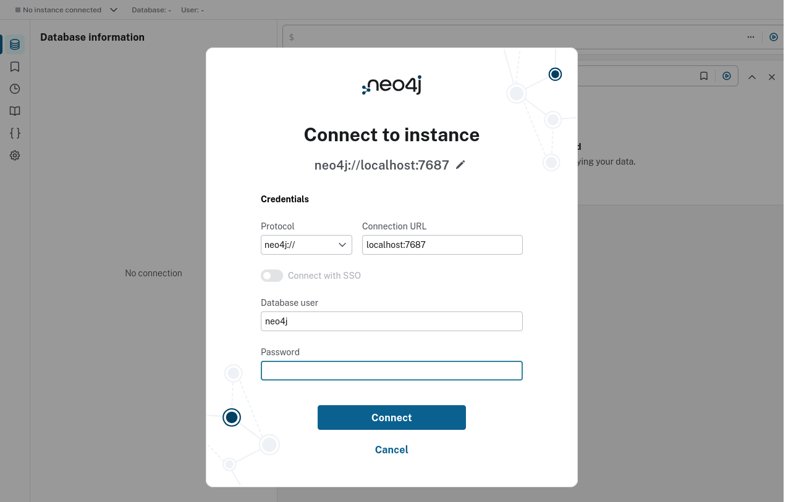
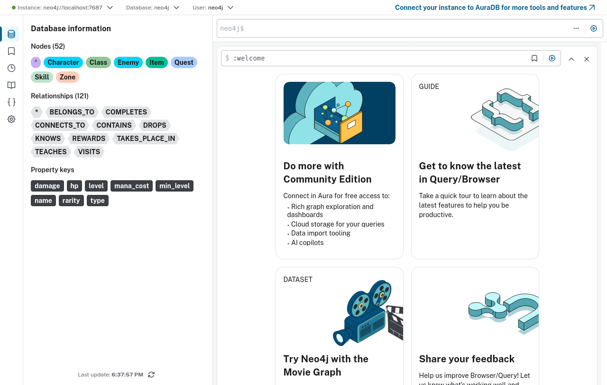
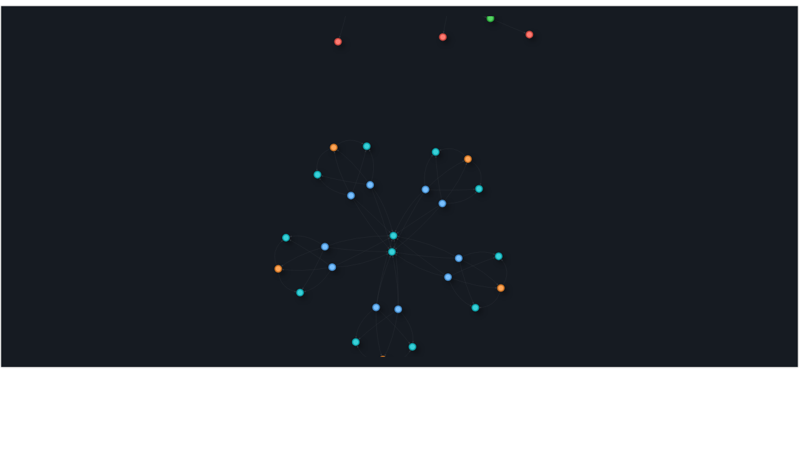
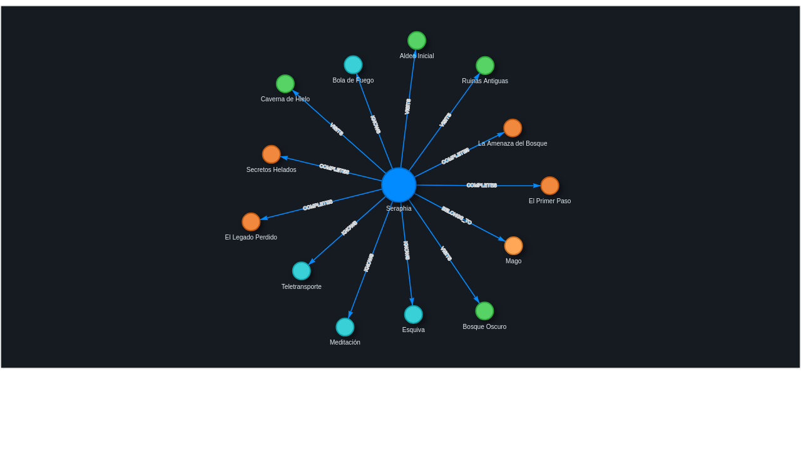
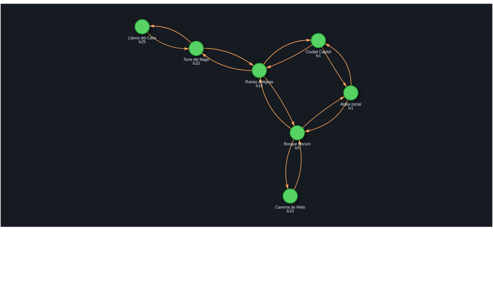
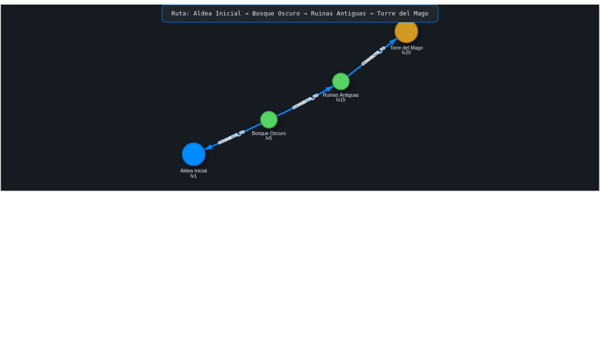
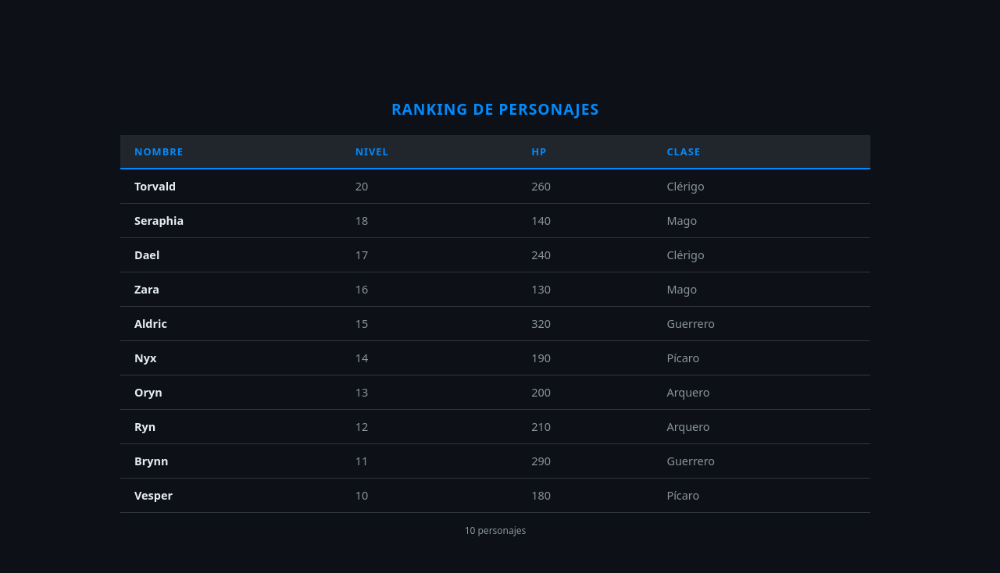
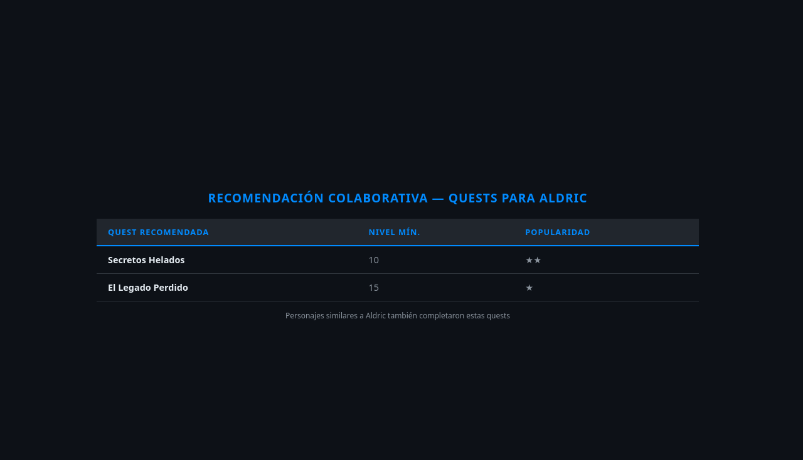
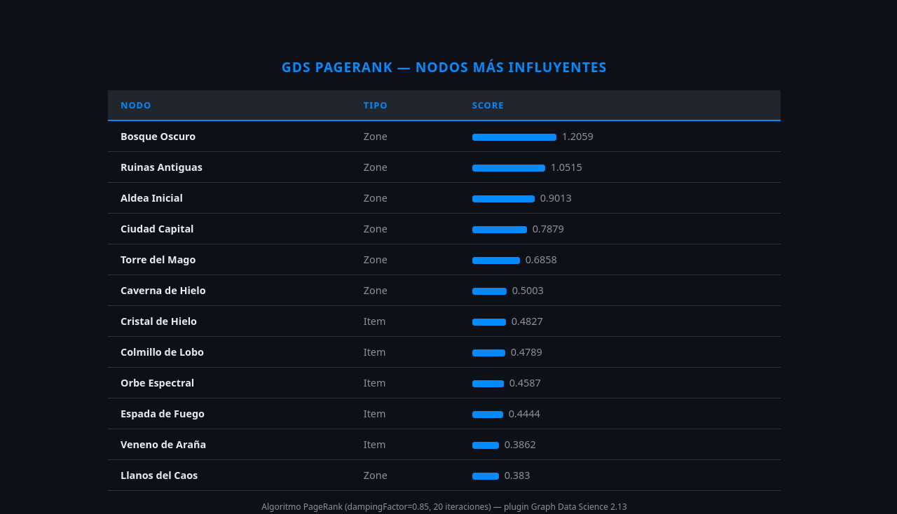

Exploración completa: modelo de datos, Cypher, algoritmos GDS
e integración Python. Dominio: catálogo RPG.
Los datos se almacenan como nodos conectados por relaciones, cada uno con propiedades.
| Aspecto | Neo4j | PostgreSQL | MongoDB |
|---|---|---|---|
| Modelo | Grafo | Tablas | Documentos |
| Traversal profundo | Nativo | JOINs recursivos | Limitado |
| Shortest path | Built-in | pgRouting ext. | No nativo |
| Algoritmos grafo | GDS plugin | No | No |
| Esquema | Opcional | Rígido | Flexible |
| Recomendaciones | Nativo | Con joins | Con lookups |
Un mundo RPG modelado como grafo: personajes, clases, habilidades, zonas, enemigos, items y quests.
~60 nodos · ~150 relaciones tras el seed
Interfaz oficial para explorar el grafo. React SPA que funciona sobre Bolt (puerto 7687).
:sysinfo de métricas-- URL de acceso local http://localhost:7474 -- En la LAN http://192.168.0.42:7474

Neo4j infiere el esquema dinámicamente. Este procedimiento lo visualiza.
CALL db.schema.visualization()
Equivalente al ERD en SQL, pero emergente — el esquema es los datos.

MATCH (n)-[r]->(m) RETURN n, r, m LIMIT 80
La visualización usa D3.js con simulación de fuerzas. Los nodos más conectados se posicionan al centro.

MATCH (c:Character {name:'Seraphia'}) -[r]-(n) RETURN c, r, n
Todos los vecinos directos de Seraphia: clase, habilidades, zonas visitadas y quests completadas.
-[r]- sin dirección → ambos sentidos-[r]-> dirigido → solo salientes-[r:KNOWS]->
MATCH (a:Zone) -[r:CONNECTS_TO]-> (b:Zone) RETURN a, r, b
El mapa del mundo como grafo de rutas transitables. Ideal para calcular accesibilidad y progresión.
-- Zonas a distancia ≤3 desde la Aldea MATCH (s:Zone {name:'Aldea Inicial'}) -[:CONNECTS_TO*1..3]-(z) RETURN DISTINCT z.name, z.level

MATCH (a:Zone {name:'Aldea Inicial'}), (b:Zone {name:'Torre del Mago'}) MATCH p = shortestPath( (a)-[:CONNECTS_TO*]-(b) ) RETURN p
shortestPath() → camino óptimo únicoallShortestPaths() → todos los óptimos[:R*1..4] → limitar profundidadEn SQL necesitarías una CTE recursiva o pgRouting. En Neo4j es una función de primera clase.

MATCH (c:Character) -[:BELONGS_TO]-> (cl:Class) RETURN c.name AS Nombre, c.level AS Nivel, c.hp AS HP, cl.name AS Clase ORDER BY c.level DESC
Cypher tiene ORDER BY, LIMIT, SKIP, WHERE, WITH, UNWIND, CASE, count(), collect(), sum()…

MATCH (z:Zone) -[:CONTAINS]->(e:Enemy) -[:DROPS]-> (i:Item) RETURN z.name AS Zona, e.name AS Enemigo, i.name AS Item, i.rarity AS Rareza ORDER BY i.rarity
3 niveles de profundidad, cero JOINs explícitos. El patrón Cypher es la consulta.
MATCH (yo:Character {name:'Aldric'}) -[:COMPLETES]->(q:Quest) <-[:COMPLETES]-(similar) -[:COMPLETES]->(nueva:Quest) WHERE NOT (yo)-[:COMPLETES]->(nueva) RETURN nueva.name AS Quest, count(DISTINCT similar) AS Score ORDER BY Score DESC
El mismo patrón detrás de Netflix, Amazon y Spotify — resuelto en 8 líneas de Cypher.

-- 1. Proyectar grafo en RAM CALL gds.graph.project( 'mi_grafo', [...labels], {...rels} ) -- 2. Ejecutar algoritmo CALL gds.pageRank.stream( 'mi_grafo', {maxIterations: 20, dampingFactor: 0.85} ) YIELD nodeId, score

Seguidores, amigos, influencers, comunidades, propagación viral
Filtrado colaborativo, "usuarios como tú también compraron", contenido similar
Patrones en transacciones, anillos de fraude, cuentas relacionadas
Grafos de conocimiento, ontologías, motores de búsqueda semántica
Análisis de impacto, propagación de fallos, CMDB, microservicios
Rutas óptimas, cuellos de botella, trazabilidad de origen
Si tu dominio tiene conexiones ricas y necesitas traversal profundo, caminos, comunidades o recomendaciones — Neo4j es la herramienta correcta.